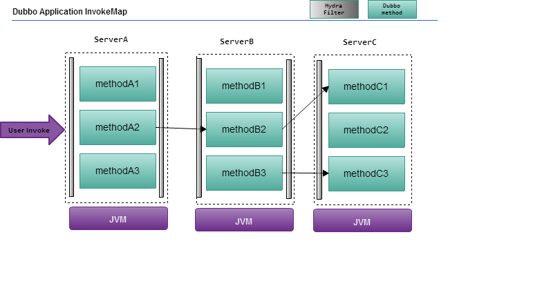
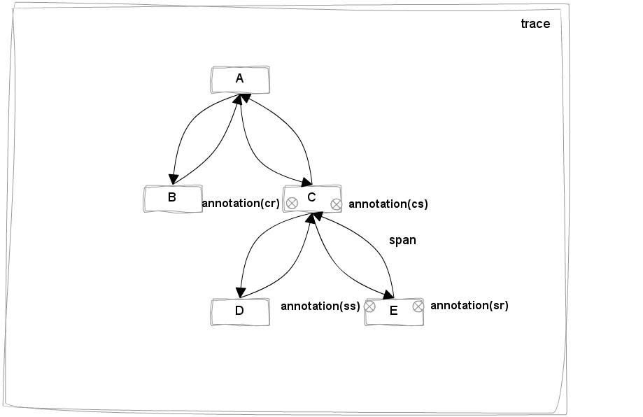
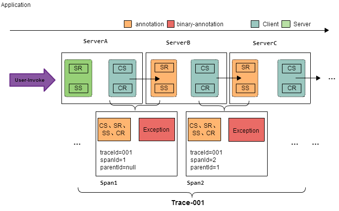
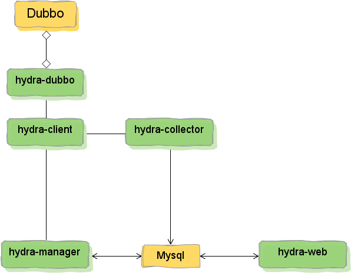
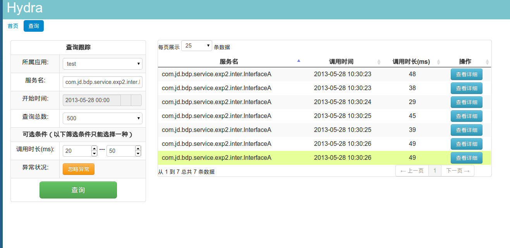
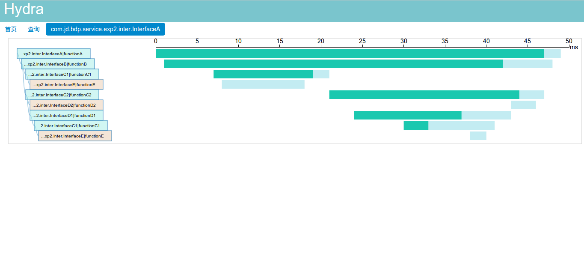

支撑互联网应用的各种服务通常都是用复杂大规模分布式集群来实现的。而这些互联网应用又构建在不同的软件模块集上，这些软件模块，有可能是由不同的团队开发、可能使用不同的编程语言来实现、有可能布在了几千台服务器，横跨多个不同的数据中心。因此，就需要一些可以帮助理解系统行为、用于分析性能问题的工具。
hydra分布式跟踪系统就为了解决以上这些问题而设计的。
Google的论文《Dapper, a Large-Scale Distributed Systems Tracing Infrastructure》是我们设计开发的指导思想(原文和译文地址 https://github.com/bigbully/Dapper-translation)。Google针对自己的分布式跟踪系统Dapper在生产环境下运行两年多时间积累的经验，在论文中重点提到了分布式跟踪系统对业务系统的零侵入这个先天优势，并总结了大量的应用场景，还提及它的不足之处。我们通过对这篇论文的深入研究，并参考了Twitter同样依据这篇论文的scala实现Zipkin，结合京东自身的现有架构，我们认为分布式跟踪系统在京东内部是非常适合的，而且也是急需的。
分布式跟踪的领域模型其实已经很成熟，早在1997年IBM就把ARM2.0(Application Response Measurement)作为一个公开的标准提供给了Open Group，无奈当时SOA的架构还未成熟，对业务的跟踪还需要直接嵌入到业务代码中，致使跟踪系统无法顺利推广。
如今互联网领域大多数后台服务都已经完成了SOA化，所以对业务的跟踪可以直接简化为对服务调用框架的跟踪，所以越来越多的跟踪系统也涌现出来。 在hydra系统中，我们使用的领域模型参考了Google的Dapper和Twitter的Zipkin(http://twitter.github.io/zipkin/)。
京东内部，尤其是我们部门有很多业务系统使用dubbo作为服务调用框，所以我们的分布式跟踪系统第一个接入组件就是dubbo。另一个原因也是因为我们团队对dubbo有着非常深入的理解，加之dubbo本身的架构本身十分适合扩展，作为服务调用框架而言，跟踪的效果会非常明显，比如Twitter的Zipkin也是植入到内部的Finagle服务调用框架上来进行跟踪的。
由于现阶段hydra主要接入了dubbo服务调用框架,所以在这必须了解dubbo的几个模型:
dubbo的结构入下图所示：
Hydra中跟踪数据模型:
Annotation在整个跟踪数据模型中最灵活的，灵活运用annotation基本能表达你所想到的跟踪场景。在hydra中(参考了zipkin)定义4种不同value的annotation用来表达记录span 4个最基本的事件。通过这4个annotation能计算出链路中业务消耗和网络消耗时间。
如图所示的应用场景对A服务的调用。A服务在被调用的过程中会继续调用服务B和服务C,而服务C被调用之后又会继续调用服务D和服务E。在我们的领域模型中，服务A被调用到调用完成的过程，就是一次trace。而每一个服务被调用并返回的过程（一去一回的箭头）为一个span。可以看到这个示例中包含5个span，client-A，A-B，A-C，C-D，C-E。span本身以树形结构展开，A-C是C-D和C-E的父span，而client-A是整个树形结构的root span。之后要提到的一个概念就是annotation，annotation代表在服务调用过程中发生的一些我们感兴趣的事情，如图所示C-E上标出来的那四个点，就是四个annotation，来记录事件时间戳，分别是C服务的cs（client send），E服务的ss（server receive）,E服务的ss（server send）, C服务的cr（client receive）。如果有一些自定义的annotation我们会把它作为BinaryAnnotation，其实就是一个k-v对，记录任何跟踪系统想记录的信息，比如服务调用中的异常信息，重要的业务信息等等。
Hydra中跟踪模型和dubbo模型之间关系:
如图所示的应用场景对A服务的调用。A服务在被调用的过程中会继续调用服务B和服务C,而服务C被调用之后又会继续调用服务D和服务E。在我们的领域模型中，服务A被调用到调用完成的过程，就是一次trace。而每一个服务被调用并返回的过程（一去一回的箭头）为一个span。可以看到这个示例中包含5个span，client-A，A-B，A-C，C-D，C-E。span本身以树形结构展开，A-C是C-D和C-E的父span，而client-A是整个树形结构的root span。之后要提到的一个概念就是annotation，annotation代表在服务调用过程中发生的一些我们感兴趣的事情，如图所示C-E上标出来的那四个点，就是四个annotation，来记录事件时间戳，分别是C服务的cs（client send），E服务的ss（server receive）,E服务的ss（server send）, C服务的cr（client receive）。如果有一些自定义的annotation我们会把它作为BinaryAnnotation，其实就是一个k-v对，记录任何跟踪系统想记录的信息，比如服务调用中的异常信息，重要的业务信息等等。
对于分布式跟踪系统而言，必须对接入的基础组件进行改造，我们对dubbo的改造很简单，只是在过滤器链上增加一个过滤器，我们将其封装成一个hydra-dubbo的jar包，由dubbo直接依赖。
所有跟踪所需的通用性的API我们封装在hydra-client中，遍于接入各种组件。 hydra-manager用来完成每个服务的注册、采样率的调成、发送seed生成全局唯一的traceId等通用性的功能。所有hydra-manager数据统一用mysql进行存储。
我们使用hydra-collector和hydra-collector-service进行跟踪数据的异步存储，中间使用metaQ进行缓冲。
hydra-manager和hydra-collector使用dobbo提供服务。
考虑到数据量不大的情况，以及部署的复杂度。我们提供了两种更简便的架构
在使用mysql进行存储的时候我们并未进行分库分表，因为考虑到存储的是监控数据，时效性较高，而长期的监控数据的保留意义并不大。所以我们在主表上有明确的时间戳字段，使用者可以自行决定何时对保存的历史数据进行迁移
当前hydra1.0版的功能并不多，主要有针对服务名、时间、服务调用响应时间、是否发生异常这几个条件进行查询。如下图所示：
这个界面的左侧为跟踪的查询条件，首先会根据服务的所属应用(相当于dubbo中的Application)筛选出应用的下的所有服务（相当于dubbo中的interface），以及服务调用发生的开始时间和所需要查询出来的服务数量。
我们针对一些敏感信息可以进行进一步的筛选，比如服务的调用时长（仅限根服务）和是否发生异常（可以覆盖根服务和子服务）。
对于每一次跟踪，我们可以进一步展示他的服务调用层级与响应时间的时序图。如下图所示：
我们参考Dapper中论述的场景，用绿色代表服务调用时间，浅蓝色代表网络耗时，另外如果服务调用抛出异常被hydra捕捉到的话，会用红色表示。鼠标移动到时序图中的每一个对象上，会Tip展现详细信息，包括服务名、方法名、调用时长、Endpoint、异常信息等。
Hydra分布式跟踪系统可以跟踪环境的数据量大小选择上文所述的三种部署方式
因为是quick start，这里只介绍低并发和小数据量的情况。不过这里会详细介绍如何通过配置文件的修改来切换这三种部署方式。